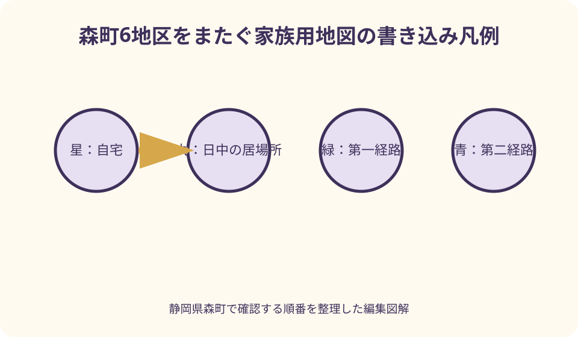
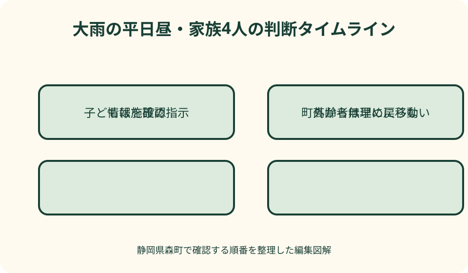

防災・家族の備え｜最終確認 2026-08-10
静岡県森町のハザードマップを家族用に書き込む｜避難先・別経路・判断時刻
ハザードマップは眺めるだけでは、家族が離れている時の判断まで支えてくれません。森町公式の地区別地図を原本に、自宅と普段の居場所、災害別の避難先、使わない道、移動開始の合図、安否確認方法を書き加え、晴れた日に歩いて確かめるところまでを一つの作業にします。

編集イラスト結論：家族用地図は「危険を知る図」と「動く図」を重ねる
森町のハザードマップへ家族情報を書き込む目的は、きれいな地図を完成させることではありません。自宅や通学先の危険を読み、誰が、どの情報を合図に、どこへ、どの道で移動するかを家族が短時間で判断できるようにすることです。
公式地図は災害リスクと防災関係施設を示す原本です。そこへ家庭固有の居場所、移動能力、連絡方法を加えることで、初めて自分たちの行動図になります。原本の色や凡例を塗りつぶさないよう、書き込み用のコピーを別に作ります。
地図に色が付いていない場所も絶対安全とは限りません。想定条件を超える雨、局地的な冠水、倒木、地震後の道路損傷などは起こり得ます。区域の境界を安全と危険の一本線として扱わず、現地の状況と最新情報を合わせて判断します。
この記事の事実確認日は2026年8月10日です。地図、避難施設、道路、情報配信方法は更新されるため、作成時には森町公式ページの更新日を確認してください。発災時は手元の紙より、町や気象庁などの最新発表を優先します。
最初に森町公式の該当地区図と全図を用意する
森町防災ハザードマップは、土砂災害危険箇所や河川氾濫区域、防災関係施設の位置を示しています。町公式ページでは森町全図に加え、三倉、天方、森、一宮、園田、飯田の地区別PDFが公開されています。
自宅のある地区図だけでなく、隣接地区へ通勤・通学する家族は該当する図も用意します。町外へ移動する人は、勤務先や学校の自治体が公表する地図も別に確認します。一枚に無理に縮めず、生活圏ごとに分ける方が読めます。
印刷は文字と凡例が読める大きさを優先します。家庭用プリンターで細部が潰れる場合は、画面を拡大して自宅周辺を印刷し、全体の位置関係を示す広域図と二枚組にします。カラー印刷が難しければ凡例の色名を手書きします。
表面へ書き込む前に、原本PDFのURL、ページ名、更新日、印刷日を余白へ記します。後で新旧を比較できるよう、未記入の原本も保存します。スクリーンショットだけでは出典と更新状況を追いにくいため、URLも残します。
凡例を先に読み、災害ごとの色を混ぜない
地図を開いたら、最初に凡例を家族で読みます。洪水の浸水想定、土砂災害に関する区域、避難施設などは意味が異なります。赤や黄色という見た目だけで判断せず、何の災害を、どの条件で示す色かを言葉で確認します。
一つの地点に複数のリスクが重なる場合があります。洪水時には使える高い場所でも、斜面に近ければ土砂災害時の候補には向かないことがあります。「避難先は一か所」と先に決めず、地震、大雨、土砂災害の欄を分けます。
浸水深の区分は、建物の階数や家族の移動能力を考える材料になります。ただし、水深だけで在宅の可否を決めることはできません。流速、孤立、停電、断水、建物の構造など、地図に表れない条件もあります。
国のハザードマップポータルサイトでは、複数の災害リスク情報を重ねて閲覧できます。一方、国のサイトも詳細は市町村作成の地図で確認するよう案内しています。森町公式図を主資料とし、重ねる地図を補助に使う順序が明確です。
自宅と家族の普段の居場所を点で記す
自宅は目立つ星印にし、住所を地図外の欄へ書きます。地図上へ住所や氏名を大きく書くと、持ち出した際の個人情報が増えるため、家族内で分かる記号でも構いません。集合住宅では階数と普段使う出口も控えます。
家族が平日昼にいる学校、職場、通所先、よく使う店舗を別の記号で置きます。災害は全員が在宅中に起こるとは限りません。自宅からの経路だけでなく、それぞれの場所から安全を確保する方法を考えます。
高齢者や子どもについては、本人だけで移動できる距離、階段の可否、迎えが必要かを記号の横へ短く書きます。「祖母は徒歩10分まで」「子は学校待機」のように具体化すると、家族が無理な迎えへ出る危険を減らせます。
車、徒歩、自転車では通れる道が違います。普段は車中心の家庭も、道路規制や渋滞、冠水で使えない場面を想定し、徒歩用の線を別色で入れます。燃料があることと、安全に走行できることは同じではありません。
避難先は施設名ではなく災害種別と入口まで書く
町の一覧で指定緊急避難場所と指定避難所を確認します。指定緊急避難場所は命を守るため緊急的に逃れる場所、指定避難所は被災者が一定期間生活する場所という役割の違いがあります。名称が似ていても同じ意味ではありません。
地図には、災害種別ごとの第一候補と第二候補を記します。「大雨時A、地震時B」のように書けば、一つの施設がどの災害にも適するという誤解を避けられます。施設が開設されたかは町の最新情報で確かめます。
広い敷地は、正門、体育館入口、駐車場側など待ち合わせ場所が分かれます。家族が別々に着いて探し回らないよう、入口や目印まで決めます。夜に門が閉まるか、坂や段差があるかも晴天時に見ます。
親族宅や知人宅を候補にするなら、本人の同意、災害リスク、移動経路を確認します。地図上で近いだけで安全とは限りません。町外へ移動する計画は、早い段階で動ける風水害と突発地震で分けます。
第一経路・第二経路・通らない道を三色で描く
第一経路は緑、第二経路は青、災害時に避ける道は赤い斜線など、家族内の色を決めます。経路を二本描いても、同じ橋や同じ斜面沿いを通るなら同時に使えなくなるため、共通する弱点がないか確認します。
太田川や支流を渡る橋、低い道路、崖や急傾斜地の下、倒木の影響を受けやすい山道、ブロック塀が続く道などを現地で探します。公的な区域だけでなく、家族が歩いて気付いた障害を付箋で加えます。
近道でも水路沿いや暗い狭道は、豪雨や夜間に状況を把握しにくくなります。所要時間だけでなく、照明、歩道、段差、手すり、休める場所を評価します。車いすやベビーカーは実際に通れる幅か確認します。
現地確認は天候の良い明るい時間に行います。増水した川、冠水路、斜面を確認するために近づいてはいけません。危険が高まった後は地図を修正する時間ではなく、すでに決めた安全行動を始める時間です。

地図の外側に避難を始める合図を書く
経路だけでは、いつ動くかを決められません。余白に「高齢者等避難が出たら祖父母は移動」「大雨警報と町の情報を確認」「強い揺れの後は落下物から離れる」など、家族ごとの開始条件を書きます。
風水害では、暗くなる前、道路が危険になる前に移動できるかが重要です。気象情報、町の避難情報、家の周囲の変化を組み合わせます。河川の様子を見てから決めるのではなく、早めの段階で判断できる条件にします。
静岡県の「わたしの避難計画」は、身近な災害リスクを踏まえ「いつ」「どこ」へ避難するかを事前に整理する仕組みです。家族地図の余白へ同じ二項目を書き、地図上の場所と行動時刻を結び付けます。
判断する人が不在の時も動ける表現にします。「父の連絡を待つ」では、町外で連絡不能になると行動が止まります。情報の種類と家族ごとの条件を決め、連絡がなくても各人が安全を選べるようにします。
連絡先は地図面へ詰め込まず別枠にする
連絡欄には、家族の電話番号、遠方の中継役、学校・職場・通所先、森町危機管理課などを役割別に記します。番号を並べるだけではなく、「安否集約」「迎えの規則確認」のように何を聞く相手かを書きます。
災害用伝言ダイヤル171とweb171で使う共通の電話番号も載せます。家族全員が同じ番号をキーにしなければ、互いの伝言へたどり着けません。操作の詳しい手順は別カードにし、地図には最小限の流れを残します。
地図を玄関や冷蔵庫へ掲示する場合、来客にも個人情報が見えます。詳細な電話番号や医療情報は裏面または折り畳みカードへ分け、表面には家族だけが分かる記号を使う方法があります。
番号変更、進学、転職、通所先の変更があれば、その日に地図も更新します。スマートフォンの連絡先だけ直して紙が古いままになるのを避け、掲示用、持出袋用、家族各自用を一度に差し替えます。
在宅避難・屋内安全確保の条件も書き分ける
ハザードマップを作ると、避難とは必ず指定施設へ移動することだと思いがちです。しかし、移動経路がすでに危険な場合は、屋外へ出る方が危険になることがあります。町の情報と自宅の状況を踏まえ、安全な行動を選びます。
在宅を候補にするなら、地図の色だけで決めません。建物の構造、浸水の想定、斜面との位置、停電・断水への備え、家族の健康状態を確認します。「自宅に色がないから残る」という短い判断にしないことが大切です。
屋内安全確保を考える場合は、上階や斜面から離れた部屋など候補を間取り図へ書きます。地域地図と室内図は縮尺も目的も違うため、一枚へ無理に統合せず、表に地域、裏に家の中という二面構成にします。
避難先へ着いた後に生活できるかも別問題です。薬、補助具、乳幼児用品、ペット用品など必要物を持出袋へつなぎます。地図の余白には袋の保管場所と担当だけを書き、品目一覧は別紙にします。
子ども・高齢者と一緒に読める記号へ変える
子ども用には記号を絞ります。自宅、学校、安全候補、通らない道、助けを求める場所の五つ程度から始め、本人に地図を指さして説明してもらいます。大人の説明を復唱できるかではなく、自分の行動を選べるかを見ます。
高齢者には大きな文字と高い色の差を使い、色だけで区別しないよう実線、点線、斜線を併用します。老眼鏡がなくても見えるか、手が動かしにくくても紙を開けるかを本人と確認します。
日本語を読むのが難しい家族には、矢印、写真、施設の外観、やさしい言葉を使います。文字を減らし過ぎて意味が曖昧にならないよう、「雨の時は行かない道」など短い説明を記号の横へ添えます。
家族ごとに移動速度が違うなら、同じ経路でも所要時間を別々に測ります。元気な大人の徒歩時間を全員へ当てはめず、休憩、坂、段差、荷物を含めます。支援者が来られない場合の代案も地図外へ書きます。
晴れた日に歩き、写真と時刻で現地情報を残す
家族で第一経路を歩き、出発時刻と到着時刻を記録します。交差点、橋、斜面、道幅が変わる場所、夜に迷いそうな分岐を撮影し、地図上の番号と写真番号を対応させます。写真だけを保存せず撮影日も残します。
第二経路も別日に歩きます。途中まで同じ道なら、分岐後だけでなく共通区間の危険を見ます。工事、季節の草木、農作業車、通学時間の交通量など、地図に固定表示されない条件をメモします。
避難先候補では、入口、掲示板、電話、公衆トイレ、段差を確認します。ただし、施設職員へ開設を約束させる作業ではありません。災害時の開設状況は町の情報で判断するという注記を地図へ入れます。
帰宅後は、気付きを三分類します。「常に避ける」「大雨時に避ける」「地震後に確認して避ける」と分ければ、赤印だらけで読めない地図になりません。不明点は森町危機管理課など担当先へ質問します。

家族用ハザードマップを作る良い点
良い点は、家族で同じ地名を使えることです。「いつもの公園」ではなく、正式な施設名と入口、第一・第二候補を共有できます。連絡が途絶えても、各自が次に向かう場所を推測しやすくなります。
書き込む過程で、避難先より経路が弱いことに気付けます。川を渡る道しか考えていなかった、斜面側へ近づく経路だった、夜は街灯が少なかったなど、公式地図を眺めるだけでは見落としやすい生活上の条件が表れます。
家族の日中の居場所を載せると、自宅中心の備えから離れられます。子どもは学校、高齢者は通所先、大人は町外勤務という現実に合わせ、迎えに行く人だけでなく「施設で待つ」という安全な選択を共有できます。
紙の地図は停電や通信障害でも見られます。デジタル地図は拡大や重ね合わせに向くため、両方を使うと補完できます。紙かスマートフォンかの二択にせず、役割を分けて持つことが実用的です。
森町の地図案内に注文したい点
注文したい点は、地区別PDFを初めて開く人にとって、家族情報をどこへ、どの順で追記すればよいかまでは示されないことです。公式図とセットで使える、災害別避難先・別経路・開始条件の記入例があると実行へ移しやすくなります。
指定施設の一覧を見ただけでは、災害ごとの適否や当日の開設を取り違える恐れがあります。地図から施設ページへ移り、町の開設情報を受け取る手段まで一続きに案内されると、利用者の誤解を減らせます。
PDFの縮尺や文字は、高齢者やスマートフォンだけで見る人には扱いにくい場合があります。大きな文字の確認シート、白黒印刷向けの凡例、地区をまたぐ通勤・通学者向けの作成例が用意されると家庭での利用が広がります。
また、古い印刷物が家庭に残り続ける問題があります。更新時に何が変わったかが分かる一覧と、旧版を見分ける明瞭な版番号があると助かります。家庭側も印刷日を書き、年一回は公式ページへ戻る必要があります。
印刷できない・歩けない時の代案・結論
プリンターがない場合は、公式PDFを端末へ保存し、書き込み機能で記号を加える方法があります。画像へ加工する時は、出典と加工した旨、確認日を残します。必要なら家族が見やすい範囲をコンビニ等で印刷します。
現地を歩けない家族は、別の家族や支援者が写真と動画で経路を共有し、本人の移動条件を聞き取ります。地図上で通れるように見えても、段差や坂で難しいことがあります。代理確認だけで完了にせず、本人の意見を反映します。
第一・第二経路がどちらも同じ危険箇所を通る場合は、避難先そのものを見直します。遠い第三経路を足すだけでなく、大雨が強まる前の早期移動、親族宅、屋内安全確保など、時間と場所を変える代案を考えます。
結論として、家族用地図は自宅、災害別の避難先、独立した二経路、通らない場所、開始条件、連絡方法を一組にします。作成できない項目を推測で埋めず、町の公式資料や担当先へ戻り、未確認と書いて残してください。
更新日は半年ごとと生活変化の二本立てにする
定期更新は、梅雨前と地域防災訓練の前など半年ごとに設定します。公式ページの更新日、避難施設、連絡先、道路工事、家族の移動能力を読み合わせ、変更がなくても「確認済み」と日付を入れます。
臨時更新は、転居、進学、転職、通所先変更、車の運転終了、家族の歩行状態の変化が合図です。生活が変わったのに年次更新まで待つと、災害時に存在しない勤務先や使えない経路を頼ることになります。
新版を作ったら、冷蔵庫、持出袋、車、家族の財布にある旧版を回収します。データのファイル名には年月を入れ、共有フォルダーの最新版を一つ決めます。口頭の変更だけでは、離れて暮らす家族へ伝わりません。
現地写真も更新します。橋の工事、新しい塀、空き地の建築、樹木の成長などで経路は変わります。以前の写真は削除せず日付付きで保存すると、変化を説明しやすくなりますが、最新と混同しない分類が必要です。
大石の視点：土地のリスクと家族の行動は別々に記録する
不動産の相談では、ハザードマップの色だけで土地の良し悪しを断定しないことが大切です。地図は重要な公的資料ですが、建物の構造、接道、擁壁、排水、過去の修繕など、暮らしに関わる条件をすべて示すものではありません。
家族用地図では、土地の情報と行動の情報を色分けします。浸水想定や斜面に関する区域は原本の情報、避難経路や集合候補は家庭の判断です。二つを混同しなければ、更新時にどちらが変わったかを追えます。
空き家や離れて住む実家を地図へ加える場合も、災害中の見回り先にはしません。所有者、鍵、保険書類、近隣連絡先を平時に整理し、被害確認は安全確保後に行います。家を守ろうとして危険区域へ戻らない約束が必要です。
売る、貸す、住み続ける判断は、家族用地図の色だけでは決まりません。ただし、別経路の有無、支援が必要な家族の移動、維持管理の担当を可視化した記録は、今後の住まい方を家族で話すための具体的な材料になります。
固有の一枚を30分で作る書き込み順
最初の5分で、森町公式の該当地区図に更新日と印刷日を書き、自宅を星印、学校・職場・通所先を丸印にします。次の5分で凡例を読み、災害種別ごとに自宅周辺の色と意味を余白へ写します。
続く10分で、災害別の第一・第二避難先を決め、緑と青で経路を引きます。同じ橋や斜面を共通して通らないか確認し、避けたい地点へ赤い斜線を付けます。分からない場所には疑問符を付けます。
残り10分で、移動開始の合図、家族の共通連絡番号、遠方の中継役、次回更新日を書きます。情報が足りない欄は「町へ確認」「学校へ確認」と相手まで記し、想像で決めません。
その日のうちに全員で地図を指さし、「大雨の平日昼ならどこへ行くか」を一人ずつ説明します。答えが分かれた箇所は失敗ではなく、直すべき場所です。晴れた日の現地確認日も予定へ入れます。
まとめ：地図を読む、歩く、直すを繰り返す
静岡県森町の家族用ハザードマップは、町公式の地区別図を原本にします。凡例を読んで災害リスクを分け、自宅、家族の日中の居場所、災害別の避難先、独立した二経路、通らない場所を書き込みます。
余白には、避難を始める情報と時刻、家族の連絡方法、支援が必要な人の役割を記します。地図に色がないことや施設が掲載されていることだけで安全を断定せず、町の最新情報と現地の状況を合わせます。
完成したら晴れた日に歩き、所要時間、段差、橋、斜面、夜間の見え方を確かめます。紙とデジタルを併用し、梅雨前と防災訓練前、さらに生活が変わった時に更新します。
今日の一歩は、森町公式ページから自宅の地区PDFを開き、右上へ確認日を書いて自宅に星印を付けることです。そこから家族一人ずつの居場所と行動を足し、見ただけで次の安全行動が分かる地図へ育ててください。
公式情報・確認先
掲載内容は次の一次情報を基礎に整理しました。営業、料金、催し、交通は変わるため、出発前または手続き前にリンク先で最新情報を確認してください。
- 森町防災ハザードマップ（静岡県森町、2026-08-10確認）
- 防災情報（静岡県森町、2026-08-10確認）
- 町指定避難所等について（静岡県森町、2026-08-10確認）
- 森町防災ガイドブック（静岡県森町、2026-08-10確認）
- 一人ひとりの避難計画『わたしの避難計画』（静岡県、2026-08-10確認）
- みんなで防災！未来へつなぐ静岡の力（静岡県、2026-08-10確認）
- ハザードマップポータルサイト（国土交通省・国土地理院、2026-08-10確認）
- ハザードマップポータルサイト よくある質問（国土交通省・国土地理院、2026-08-10確認）